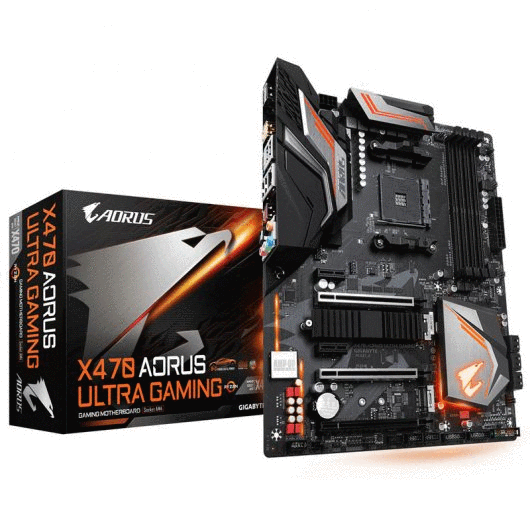
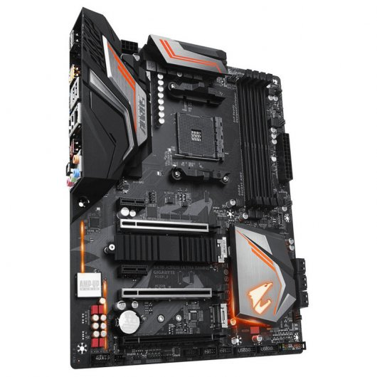
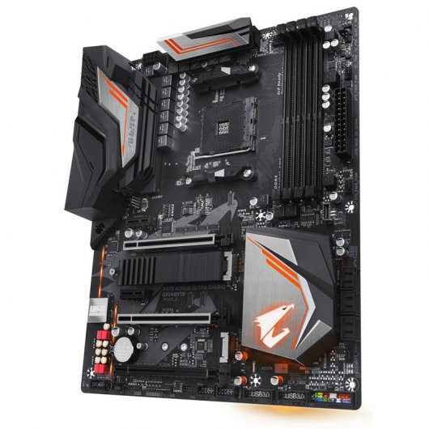
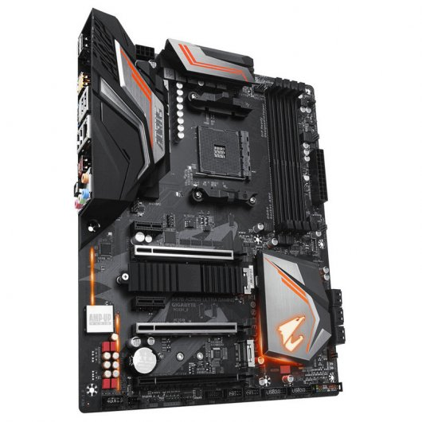
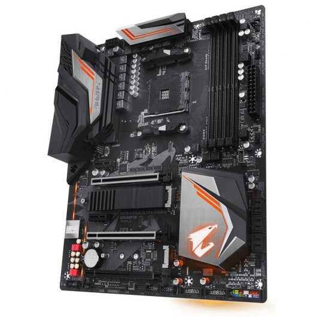

FUTURETECH STORE |

 



|
Gigabyte Aorus X470
151,90€
Gigabyte presenta su placa base X470 Aourus Ultra Gaming, una placa base con socket AMD AM4 y chipset X470.
Especificaciones
Procesador
AM4 Socket:
AMD Ryzen™ processor
AMD 7th Generation A-series/ Athlon™ processor
(Por favor, acuda a "lista de soporte de CPU" para más información.)
Chipset AMD X470
Memoria
4 x sockets DDR4 DIMM con soporte de hasta 64 GB de memoria del sistema
Arquitectura de memoria Dual Channel
Support for DDR4 3200(O.C.) / 3000(O.C.) / 2933 / 2667 / 2400 / 2133 MHz memory modules
Soporte para módulos de memoria ECC Un-buffered UDIMM 1Rx8/2Rx8 (operando en modo no-ECC)
Soporte para módulos de memoria non-ECC Un-buffered DIMM 1Rx8/2Rx8
Soporte para módulos de memoria Extreme Memory Profile (XMP)
(Por favor, consulte la "Lista de Soporte de Memoria" para más información.)
Gráfica Integrada
Procesador gráfico integrado:
1 x HDMI port, supporting a maximum resolution of 4096x2160@60 Hz*
* Support for HDMI 2.0 version and HDCP 2.2.
* Actual support may vary by CPU.
Máximo de memoria compartida de 2 GB
Audio
Codec Realtek® ALC1220
Audio de alta definición
2/4/5.1/7.1-channel
Soporte para salida S / PDIF
LAN
Chip Intel® GbE LAN (10/100/1000 Mbit)
Zócalos de Expansión
1 x slot PCI Express x16 a x16 (PCIEX16)
* Si únicamente va a instalar una tarjeta gráfica PCI Express, para un rendimiento
óptimo, asegúrese de que esté colocada en el slot PCIEX16.
1 x PCI Express x16, a x8 (PCIEX8) * La ranura PCIEX8 comparte ancho de banda con la ranura PCIEx16. Cuando la ranura PCIEX8 se ocupa con una tarjeta gráfica PCI Express, la ranura PCIEx16 funcionará en modo de hasta x8.
(Las ranuras PCIEX16 y PCIEX8 cumplen con el estándar PCI Express 3.0.)
1 x PCI Express x16, a x4 (PCIEX4)
* The PCIEX4 slot shares bandwidth with the M2B_SOCKET connector. The PCIEX4 slot becomes unavailable when a device is installed in the M2B_SOCKET connector.
2 x ranura PCI Express x1
(Las ranuras PCIEX4 y PCI Express x1 cumplen con el estándar PCI Express 2.0.)
* Actual support may vary by CPU.
Tecnología Multi Gráfica
Compatibilidad con las tecnologías NVIDIA® Quad-GPU SLI™ y 2-Way NVIDIA® SLI™
Support for AMD Quad-GPU CrossFire™ and 2-Way AMD CrossFire™ technologies
Interfaz de almacenamiento
1 x M.2 connector (Socket 3, M key, type 2242/2260/2280/22110 SATA and PCIe x4/x2* SSD support) (M2A_SOCKET)
Soporta RAID 0, RAID 1, y RAID 10
* Actual bandwidth may vary by CPU.
1 x M.2 connector (Socket 3, M key, type 2242/2260/2280 PCIe x4/x2 SSD support) (M2B_SOCKET)
6 x SATA 6Gb/s connectors
USB
Chipset:
1 x USB Type-C™ port with USB 3.1 Gen 2 support, available through the internal USB header
4 x USB 3.1 Gen 1 ports available through the internal USB headers
8 x puertos USB 2.0/1.1 (4 puertos en el panel posterior, 4 puertos disponibles a través de los conectores USB internos)
CPU:
4 x USB 3.1 Gen 1 ports on the back panel
ASMedia® USB 3.1 Gen 2 Controller:
1 x USB Type-C™ port on the back panel, with USB 3.1 Gen 2 support
1 x USB 3.1 Gen 2 Type-A port (red) on the back panel
Conectores Internos E/S
1 x conector de alimentación principal ATX 24-pin
1 x conector de alimentación ATX 12V 8-pin
1 x conector del ventilador de la CPU
1 x conexión del ventilador para refrigeración por agua
4 x conector para ventilador del sistema
2 x conectores para los ventiladores del sistema/para las bombas de refrigeración líquida
2 x digital LED strip headers
2 x digital LED strip power select jumpers
1 x CPU cooler LED strip/RGB LED strip header
2 x conectores M.2 Socket 3
6 x conector SATA 6Gb/s
1 x conector del panel frontal
1 x conector de audio en el panel frontal
1 x conector S/PDIF Out
1 x puerto USB Tipo-C™, con soporte USB 3.1 Gen 2
2 x cabezales USB 3.1 Gen 1
2 x conectores USB 2.0/1.1
1 x Trusted Platform Module (TPM) header (2x6 pin, for the GC-TPM2.0_S module only)
La función TPM es opcional según las diferentes políticas locales
1 x Clear CMOS jumper
1 x temperature sensor header
1 x RGB (RGBW) LED strip header
Panel E/S Trasero
4 x puertos USB 2.0/1.1
1 x puerto USB Tipo-C™, con soporte USB 3.1 Gen 2
5 x audio jacks
4 x puertos USB 3.1 Gen 1
1 x puerto USB 3.1 Gen 2 Type-A (rojo)
1 x HDMI
1 x Puerto RJ-45
1 x conector óptico S/PDIF Out
Controlador E/S
Chip controlador E/S iTE®
Monitorización Hardware
Detección de voltaje
Detección de temperatura
Detección de la velocidad del ventilador
Water cooling flow rate detection
Advertencia de sobrecalentamiento
Aviso en caso de fallo en el ventilador
* Whether the fan speed control function is supported will depend on the fan you install.
BIOS
2 x flash de 128 Mbit
Licencia para uso de UEFI BIOS de AMI
Soporta DualBIOS™
PnP 1.0a, DMI 2.7, WfM 2.0, SM BIOS 2.7, ACPI 5.0
Otras Características
Soporte para APP Center
* Las aplicaciones disponibles en la App Center pueden variar según el modelo de placa base. Las funciones compatibles de cada aplicación también pueden variar dependiendo de las especificaciones de la placa base.
@ BIOS ™
3D OSD
Auto Green
Soporte de Cloud Station
EasyTune
Fast Boot
Boost en los juegos
Soporte para On/Off Charge
RGB Fusion
Smart Backup
Smart Keyboard
Smart TimeLock
Smart HUD
Visor de información del sistema
USB Blocker
USB DAC-UP 2
V-Tuner
Soporte para Q-Flash
Soporta Xpress Install
Software Incluido
Norton® Internet Security (versión OEM)
cFosSpeed
Sistema Operativo
Support for Windows 10 64-bit
Soporta Windows 7 64 bits
* To support Windows 7 64-bit, you must install an AMD Summit Ridge & Bristol Ridge CPU.
Formato
Factor de forma ATX, 30.5cm x 24.4cm
|


{kind=link}
{kind=link}